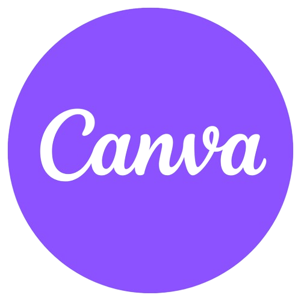

Lucas Prado Dias
Conhecimento e habilidades
- Design Gráfico: Logos, slides, protótipos de sites etc...
- Programador: Sites HTML, CSS & JAVASCRIPT
Experiências Acadêmicas
- Já estudei na escola Ernesto Alves de Oliveira
- Atualmente estudo no Senac
- Formado em Inglês na Wizard
Experiências Profissionais
- Transportes Mähler - Jovem Aprendiz
Redes Sociais

